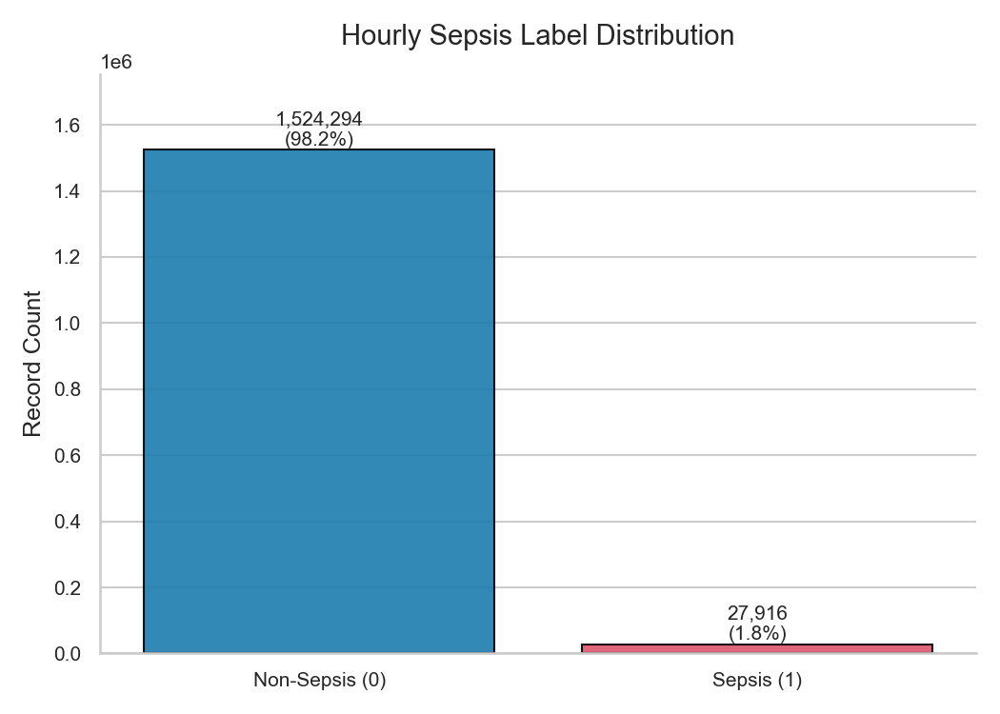
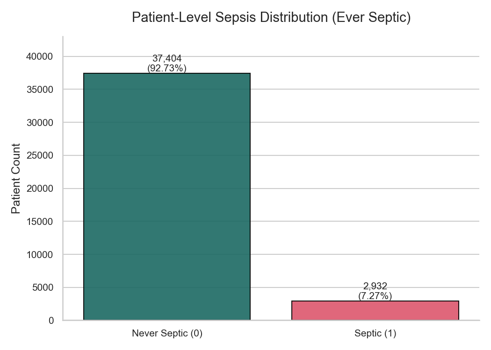
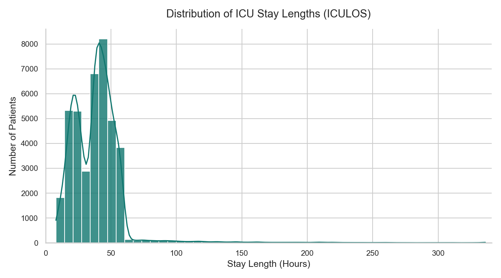
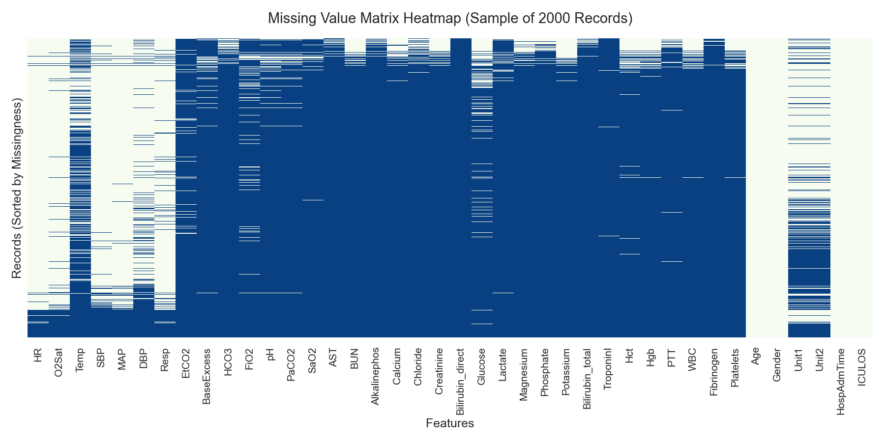
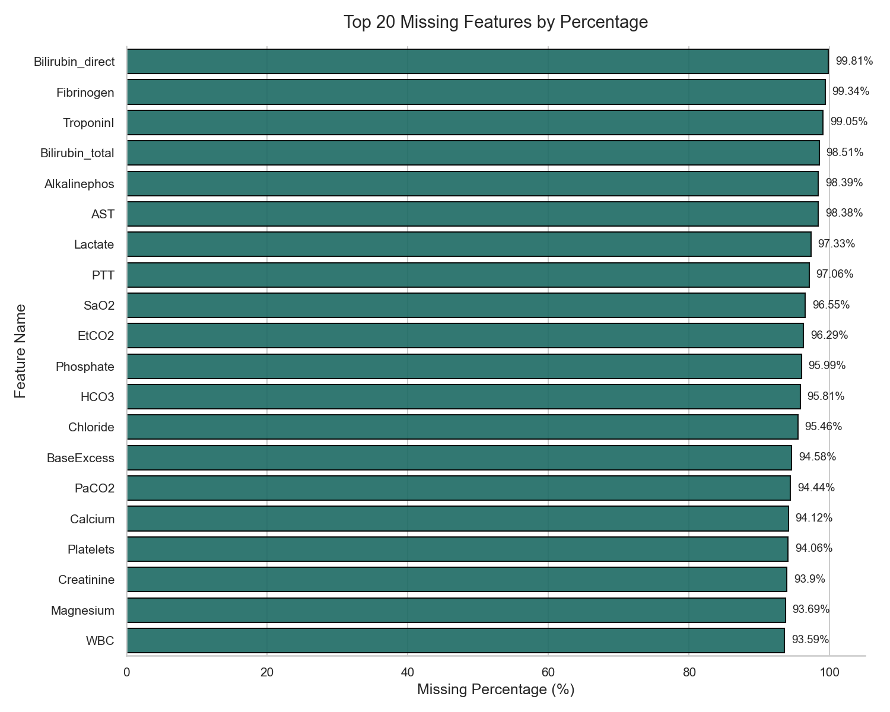
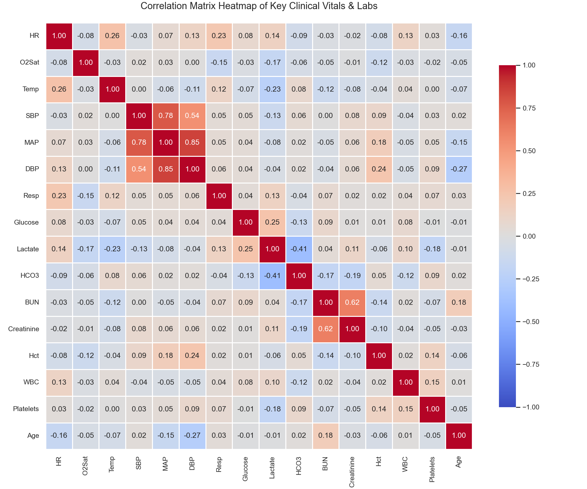
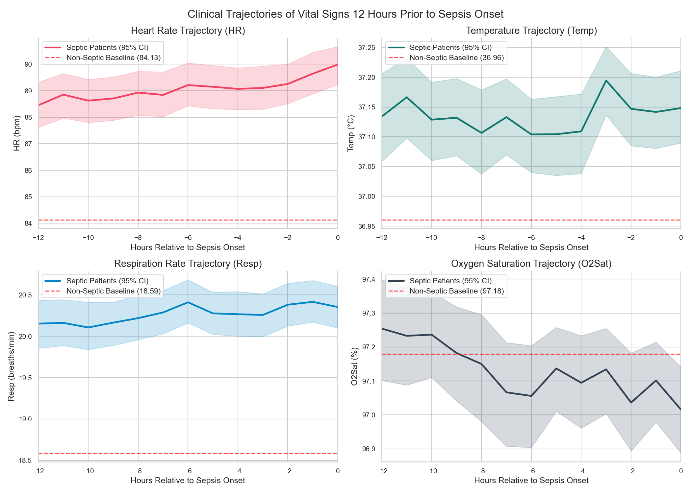

This report documents the dataset statistics and patient clinical features for the consolidated PhysioNet Challenge 2019 dataset.
| Metadata Parameter | Value |
|---|---|
| Dataset Source | PhysioNet Challenge 2019 |
| Unique Patients Cohort | 40,336 |
| Total Hourly Records | 1,552,210 |
| Features (Vitals & Labs) | 40 |
| Stay Length (Mean / Median) | 39.01h / 39.0h |
| Stay Length (Min / Max Range) | 8h - 336h |
| Derived CSV Size | 141.5 MB |
| Derived Parquet Size | 15.7 MB (9x compressed) |
Due to the acute nature of Sepsis in the ICU, the dataset exhibits extreme class imbalance at the hourly level. However, a significant fraction of the patients eventually contract sepsis.
| Category | Class Label | Count | Ratio (%) |
|---|---|---|---|
| Hourly Records | Non-Sepsis (0) | 1,524,317 | 98.20% |
| Hourly Records | Sepsis (1) | 27,893 | 1.80% |
| Patient Level | Never Septic | 37,404 | 92.73% |
| Patient Level | Sepsis (Ever Septic) | 2,932 | 7.27% |


The duration of ICU stay varies from 8 hours to over 300 hours. The histogram below outlines the right-skewed distribution of stay durations:

Laboratory results are sparse since clinicians order tests only when clinically indicated. The vital signs are measured much more regularly.


Highly correlated clinical parameter clusters include Systolic/Mean/Diastolic blood pressures (SBP, MAP, DBP) and hematology measures (Hgb, Hct).

Aligning septic patient timelines by their diagnostic hour reveals a clear temporal degradation. Heart Rate and Respiration increase steadily, while Oxygen Saturation declines prior to onset, demonstrating the clinical value of time-series LSTM modeling.
